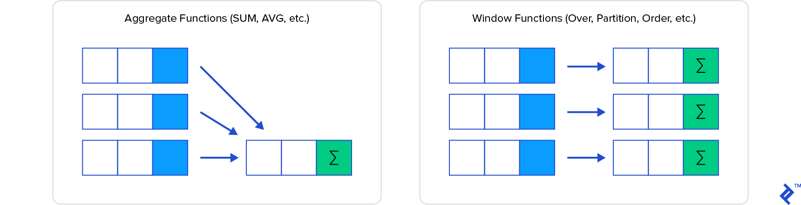

Window functions¶
A window function is a type of Select statement that performs a calculation across a set of table rows, which are somehow related to the current row. This is comparable to the type of calculation that can be done with an aggregate function but, unlike regular aggregate functions, use of a window function does not cause rows to become grouped into a single output row; the rows retain their separate identities.

Behind the scenes, the window function is able to access more than just the current row of the query result.
Syntax¶
The OVER clause is what specifies a window function and must always be included in the statement.
The default in an OVER clause is the entire rowset. As an example, let’s look at an employee table in a
company database and show the total number of employees on each row, along with each employee’s info,
including when they started with the company.
SELECT COUNT(*) OVER() As NumEmployees, firstname, lastname, date_started
FROM Employee
ORDER BY date_started;
NumEmployees firstname lastname date_started
3 John Smith 2019-01-01 00:00:00.000
3 Sally Jones 2019-02-15 00:00:00.000
3 Sam Gordon 2019-02-18 00:00:00.000
The above, like many window functions, can also be written with a regular subquery:
SELECT
(SELECT COUNT(*) FROM Employee) as NumEmployees, firstname, lastname, date_started
FROM Employee
ORDER BY date_started;
But now, let’s say we wish to show the number of employees who started in the same month as the employee in the row. We will need to narrow or restrict the count to just that month for each row. How is that done? We use the window PARTITION clause, like so:
SELECT COUNT(*) OVER (PARTITION BY MONTH(date_started),YEAR(date_started))
As NumPerMonth,
DATENAME(month,date_started)+' '+DATENAME(year,date_started) As TheMonth,
firstname, lastname
FROM Employee
ORDER BY date_started;
NumPerMonth TheMonth Firstname Lastname
1 January 2019 John Smith
2 February 2019 Sally Jones
2 February 2019 Sam Gordon
Note
Partitions allow you to filter the window into sections by a certain value or values. In contrast to
GROUP BY, the PARTITION BY clause does not reduce the number of rows returned by the query. In the last
example, if we used a Group By clause to calculate the number of employees that started in a particular month
instead of a Partition By, we would have gotten only two rows, one for January 2019 and another for February 2019.
Hence, we would be losing the information about each particular employee.
To take it further, let’s say we not only wanted to find out how many employees started in the
same month, but we want to show in which order they started that month. For that, we can use the
familiar ORDER BY clause. However, within a window function, ORDER BY acts a bit differently than
it does at the end of a query.
SELECT COUNT(*) OVER (PARTITION BY MONTH(date_started), YEAR(date_started)
ORDER BY date_started) As NumThisMonth,
DATENAME(month,date_started)+' '+DATENAME(year,date_started) As TheMonth,
firstname, lastname, date_started
FROM Employee
ORDER BY date_started;
NumThisMonth TheMonth Firstname lastname
1 January 2019 John Smith
1 February 2019 Sally Jones
2 February 2019 Sam Gordon
In this case, ORDER BY modifies the window so that it goes from the start of the partition
(in this case the month and year of when the employee started) to the current row. Thus, the count
restarts at each partition.